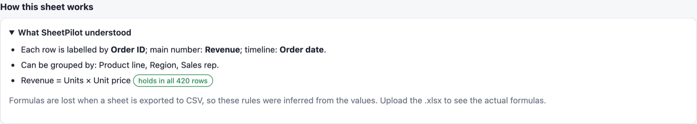

How SheetPilot reads your sheet
Nothing needs to be set up. SheetPilot looks at the column names, the values and the relationships between columns, and makes a series of choices. It always tells you what it chose, and you can change any of it.
The "How I read your sheet" box#
After an import, the top of the dashboard shows what SheetPilot decided:

- Each row is named by a column such as Name or Ticket ID, used in lists.
- Main number: the measure the dashboard is built around, shown as a total or an average.
- Which direction is good: hours, cost and churn are lower is better; scores, revenue and ratings are higher is better; anything else has no good or bad direction.
- Compared by: the column that best explains differences in the main number.
- Timeline: the date column that works as a timeline (Created rather than Hire date).
A yellow unsure tag means the top two candidates were close. Click Looks right to dismiss the box, or Adjust to change things.
How the choices are made#
| Choice | How it is decided |
|---|---|
| Main number | Numeric columns are scored by their name (score, revenue, salary, hours…), their type (percent, money) and how many rows are filled in. ID-like numbers are ignored. |
| Total or average | Revenue, budget, cost and quantity columns are added up. Salary, price, time and score columns are averaged. |
| Direction | Names such as time, hours, cost, churn or error mean lower is better. Score, revenue, rating or satisfaction mean higher is better. |
| Compared by | For every candidate column, SheetPilot measures how much of the variation in the main number is explained by the groups. The highest wins. |
| Timeline | Event dates (created, order date, start) are preferred over attributes (hire date, due, actual end). |
The name rules are written for English column names. With other languages, SheetPilot falls back to average and no direction and flags what it is unsure about.
Changing the choices#
There are three ways, and your changes are remembered for that sheet:
- The dropdowns above the comparison chart: average or total, measure, compared by and direction.
- Setup → How SheetPilot reads this sheet, with an Auto option for each choice and Reset to automatic.
- Setup → Column types, if a column was read as the wrong type (for example text instead of a date).
Formulas and logic#
SheetPilot also works out how columns are calculated from each other.
- With an Excel file, it shows your real formulas in plain words, using column names instead of cell references:
=SUM([Quality of work]:[Customer focus]). - With a CSV (which keeps values but not formulas), it infers rules from the numbers: sums, products, ratios and copies. For example Revenue = Units × Unit price, with a note of whether it holds in every row.
For the best results, upload the Excel (.xlsx) file. Inference can only guess; the real formulas are exact, and they also explain special cases such as "N/A counts as 5".

Rows that break a rule are listed, so you can spot typos and mistakes. Columns that are the sum of a set of columns, such as scores, drive the heatmap.
Findings and data checks#
The Key findings box writes a few sentences about what stands out: the biggest group, the best and worst group, how much a column explains, trends, and extreme outliers. When nothing stands out, it says so. The data checks list empty columns, entries such as "N/A" in number columns, and repeated IDs.
Next: The dashboard.
Still stuck? Check the FAQ, or ask on GitHub.